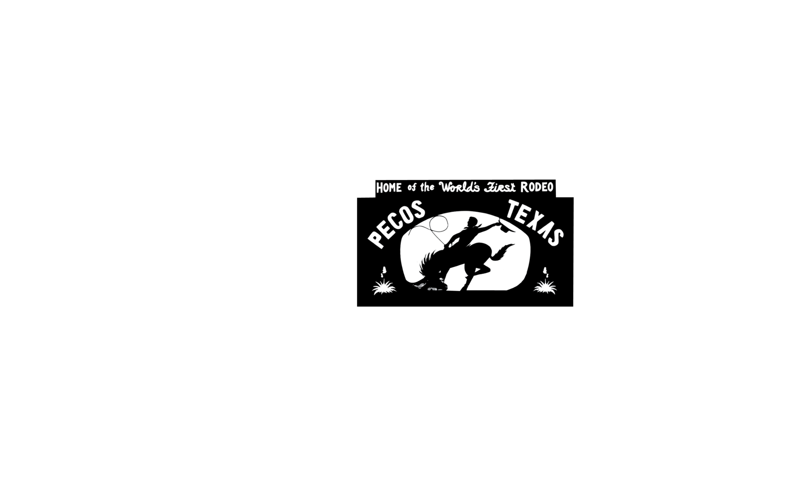

Howdy — My name is Joel and I am from Pecos, the namesake of a major river in the valley of the mountainous Trans-Pecos region, aka Far West Texas.

My hometown is quintessentially "Texan", being the birthplace of rodeo and the unofficial start of the great U.S. southwest.


Pecos is situtated within the top area for oil and natural gas development in the Western Hemisphere and is between the two National Parks in Texas, Guadalupe Mountains NP & Big Bend NP (North and South in the images, respectively).

I am a Ph.D. student in the Department of Government at Georgetown University, splitting my time between Washington DC & West Texas.